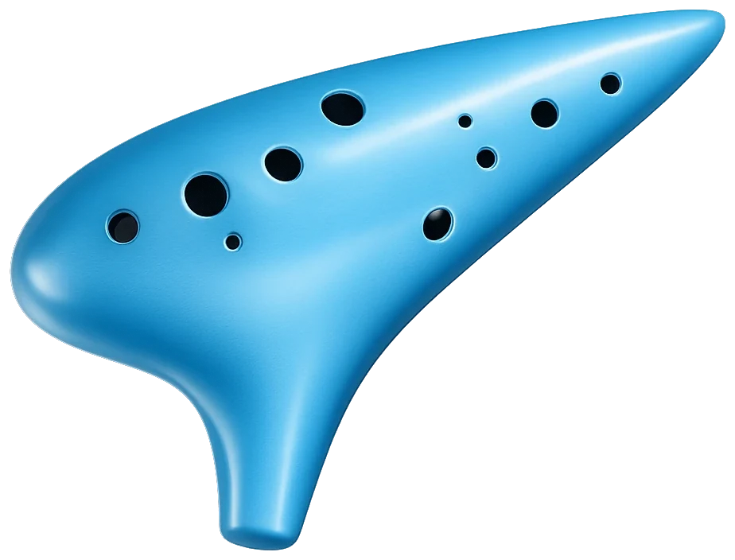

건반을 누르는 동안 음이 지속됩니다. 검은 건반은 반음(♯). 컴퓨터 키보드: Z X C V B N M = 라4~솔5, Q W E R T Y = 라5~파6 (반음은 각 건반에 표시). 연주하는 음의 12홀 운지가 옆에 표시됩니다.
Hold a button, key, or the ocarina's own holes to sustain a note. Keys: arrow keys = C-buttons, A = A.
세계의 연주곡집 Public-domain repertoire for the full ocarina
전체 연주 모드(12홀 음역)로 연주하는, 저작권이 만료되었거나 전래되어 자유롭게 연주할 수 있는 곡들입니다. 위의 🎧 감상 모드나 아래 선곡 목록에서 제목을 돌려 연속 감상할 수 있습니다. 곡별 ▶ 듣기로 멜로디를 익히고, ✎ 연습을 누르면 위쪽 악기 건반에 다음 음이 반짝입니다 — 끝까지 따라가면 곡을 익힌 것으로 기록됩니다. 듣기·연습을 시작하면 전체 연주 모드가 자동으로 켜집니다.
오카리나 정규 레슨 A conservatory-style ocarina course
실제 12홀 오카리나를 위한 실기 레슨입니다 — 악기 구조 · 그립과 입술 · 호흡(롱톤) · 텅잉 · 표준 운지표 · 리듬 · 표현 · 악기 관리 · 연습곡의 8개 강의. 연주는 여러분의 악기가 하고, 이 앱은 기준음 재생 · 청음 훈련 · 리듬 패드 · 실습 체크를 돕는 보조 도구로만 쓰입니다. 악기를 준비해 주세요.
작곡 스튜디오 Compose your own melodies
🎼 곡 만들기 직접 연주하거나 랜덤으로 시작
직접 연주한 리듬을 녹음하거나, 모티프가 있는 곡을 랜덤 생성하세요. 미리듣기 후 저장하면 모든 곡을 주소 해시로 공유할 수 있습니다.
● 녹음을 누르고 오카리나를 연주하세요 — 연주한 리듬 그대로 악보가 됩니다 (최대 32음).
📥 외부곡 가져오기 공유 링크 · JSON · 텍스트
공유받은 주소를 붙여넣거나, 젤다 5음 형식의 JSON·텍스트·파일을 가져오세요.
텍스트 예: A:1 ▼:0.5 ▶:1 ◀:1 ▲:2
공유 링크는 예전 형식과 새 URL-safe 형식을 모두 읽을 수 있습니다.
🌾 허수아비의 노래 Scarecrow's Song
게임 속 보누루처럼, 정확히 8음으로 나만의 곡을 등록하세요. 자유 연주 중 이 곡도 인식됩니다.
내 노래
게임 Games of Hyrule
🎯 리듬 챌린지 Rhythm Challenge
젤다 5음은 레인 키·방향키·A로, 전체 연주는 12홀 음역 건반으로 떨어지는 노트를 판정선에 맞춰 연주하세요. Perfect ±90ms · Good ±220ms. 길게 이어진 노트는 끝까지 누르고, 랜덤 메들리는 5곡 또는 10곡을 선택해 완주할 수 있습니다. 전체 연주에서는 제목을 돌려가며 연속 감상할 수도 있습니다.
곡명만 가볍게 돌려 감상
마우스 휠·위아래 키·모바일 스와이프로 곡을 고르세요. 감상을 시작한 뒤에는 다른 곡에 멈추기만 해도 그 곡으로 자연스럽게 넘어갑니다.
곡명을 돌려 선택하세요.
🧠 멜로디 퀴즈 Melody Quiz
소리만 듣고 어떤 곡인지 맞혀보세요 — 버튼 불빛 없이 재생됩니다.
🔁 메아리 게임 Echo (Simon)
오카리나가 들려주는 멜로디를 그대로 따라 연주하세요. 라운드마다 한 음씩 길어집니다.